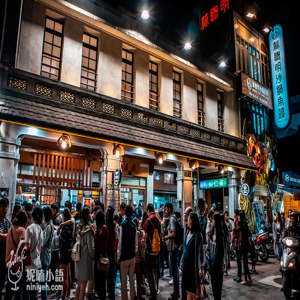
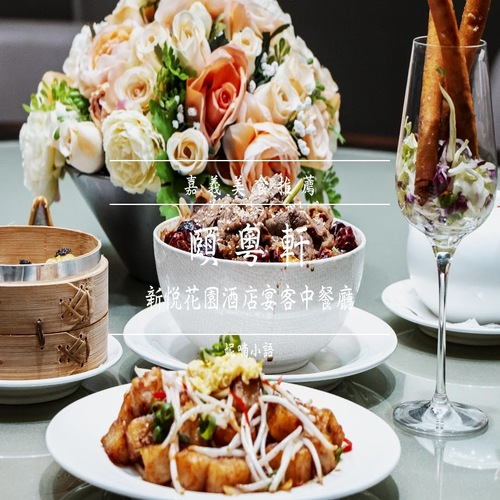
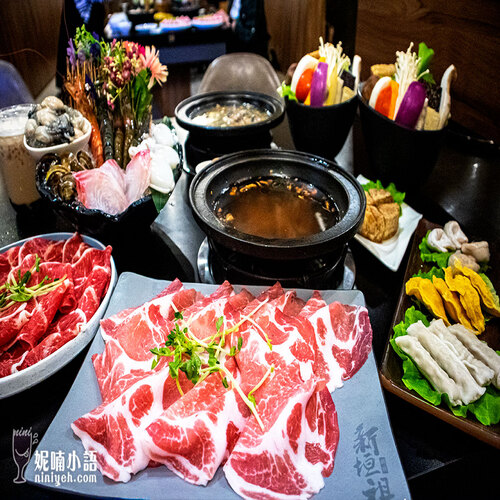

首頁
最新消息
相關行程
嘉義好喝的
嘉義好吃的
嘉義景點
聯絡我們
Search
嘉義在地人推的景點及美食
不知道嘉義有甚麼可以逛嗎
我想參加
嘉義人推薦

雖然來到嘉義第一個必吃的美食小吃會聯想到火雞肉飯， 不過拔得頭籌的嘉義餐廳絕對是文化路夜市的林聰明砂鍋魚 排隊美食我見過，但人潮堪稱媽祖遶境般或是封街造勢的盛況， 我還真是頭次見到，也太誇張了，就連 Netflix 影集『世界小吃』 為推薦台灣小吃專題，也慕名拍攝林聰明砂鍋魚頭， 拉開亞洲美食序幕， 根本是台灣之光來著，身為台客的一份子能不吃嘛!!?
圖片取自妮喃小語

兒時記憶中，每到放假父母就會帶著全家到飯店享用港式飲茶， 最喜歡蒸籠阿姨把餐車推到桌邊，想吃甚麼自己拿，延續至今對粵菜和港式小點仍有獨特情懷， 以學子回娘家的心情踏上嘉義土地， 對於嘉義美食我能說出一長串， 而位在嘉義新悦花園酒店內的頤粵軒港式飲茶餐廳，以新派粵菜著稱，在小吃為主流的嘉義美食中， 開創出另一種風格料理
圖片取自妮喃小語

闊別多年，嘉義大雅路與讀書時期的面貌已全然不同，除了連鎖飯店設點搭建之外 餐廳也全面汰換冒出許多生面孔，不變的是，大雅路依舊筆直寧靜，別墅住宅林立， 昂貴地段成為高級嘉義餐廳的兵家必爭之地，黑夜裡遠遠地瞧見『新垣祖鍋物』招牌， 渾厚有力的書寫字畫，黑底投射亮光讓周邊店家相形失色，不注意也難
圖片取自妮喃小語
崔.GO - 嘉義最好玩最好吃行程的Email List
讓我們有最新行程立刻通知你！
提交